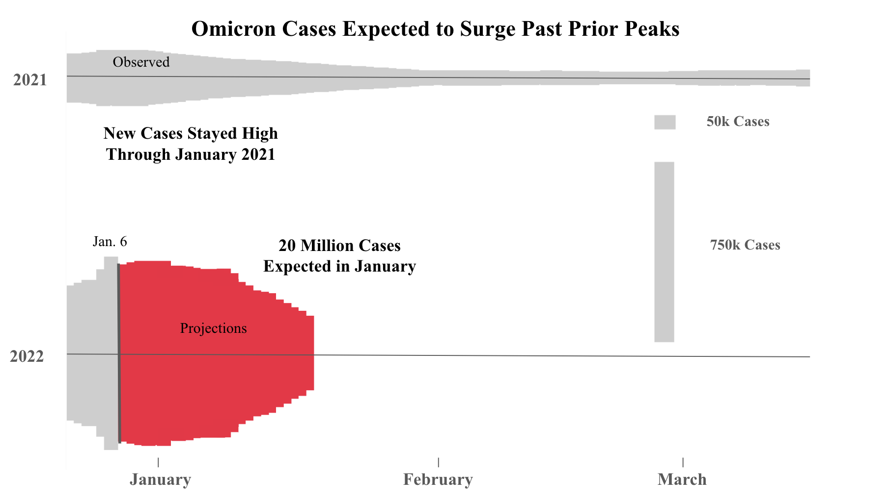

Reading & Critique

Insights about the data/visualization:
- Month is marked by angle from 0 degrees moving clockwise
- I have a small legend depicting how cases relate to size. Notably, the number of cases max in the legend is smaller than the max number of cases
- We have one note, showing that the number of cases is a 7 day average. this mark comes about halfway through the disgram
- The peak amount of cases is at the end of the visualization, and the min is the beginnning
- Winters might have higher numbers of cases than spring and summer.
Design Critique:
I will start with what is working in the visualization, then suggest what could be improved. We need to look at the visual in the context of the article it was created for. The article is written to explain how omicron will peak in the current month. The visual does an excellent job showig that COVID cases are currently at the highest level we have seen so far. We also are persuaded to consider how these cases may keep increasing or stay at high levels considering what happened a year ago, with that data conveniently colocated to the current day. Cases stayed high for a while last time, so maybe we should eexpect the same behavior now. The visual focuses on being effective, not expressive. The motivation here is to show why we should take COVID seriously right now, not to analyze trends on how covid started or has ebbed. I certianly believe it achieved its effectiveness goals primarily by minimizing more expressive data that could have been included. Without context, I believe I would have found the visual much less effective. I would have assumed it was speaking more about the development of COVID rather than impending risks. The visual expresses the severity of case counts and past trends well, but it also does a lot things poorly. I don't think that scale is well shown here. The shell like imagery makes me think of small snails subconsciously and lose the seriousness + size of the present issue. Spiraling patterns make me think about symmetric sizing to match the shape. Scale is also lost in the sense that we lose the exponentiality of cases. The threat of exponential increase in cases is not properly expressed in this graphic. There is a lot of data shown, I don't know how relevant any 2020 data was to this model and spike. Removing this could potentially convery more urgency to the current case count. Labeling is not done well. The legend does not cover what the current case count is and the note about 7 day average draws my focus away from the point about right now towards the end of january 2021 which is less relevant. Albeit jan 2021 is much more relevant than say oct 2020. Although future graphs in the article show projections about case count, this graphic avoids that element which would potentially point me to think about rising cases more so than historical ones. Overall, scale and exponential growth are really lacking as well as labeling and legends being more minor issues.
Visualization Sketches
I want to note here that I included projection data in my sketches. I took this liberty although they were not included in the original sketch because the article includes projects later on. The data was available to the designer of the original here, they chose not to use it.

Design Rationale for Sketch 1:
- More effective visualization. Shows the country filling up with cases
- More exponential nature of case growth is highlighted. Note that we cut the data to just 2022 to do this. Now you can visualization just how strong the spike will be
- Removal of weekly average cases allows us to visualize purely the sum of January much better
- Geographic location is not used, but country treated as an individual to effect people everywhere not just where the spikes might occur
- Predicted values show the expected growth better than imagination

Design Rationale for Sketch 2:
- Splitting up the data removes the subconscious size limit we put on the original snail graph
- Projections are shown and made the key takeaway as growth is more important to readers in determining when a peak will happen
- We keep some of the stronger elements of the visual for their effectiveness like the double wide area

Design Rationale for Sketch 3:
- Playing with a less effective, more expressive graph. Converting to traditional form removes any evocative emotions
- Discontinuity experimentation, testing looks less continiuous than in original, more difference notable month to month
- Include more expressive details like expected range, more scientific and objective view than original
Final Visualization Design

Final Writeup
DESCRIBE YOUR RATIONALE TO JUSTIFY THE DECISIONS FOR YOUR FINAL DESIGN. WHAT ARE YOU TRYING TO CONVEY, AND HOW DOES YOUR DESIGN FACILITATE THIS? My final design builds upon my second initial redesign. I wanted something effective, with expressive elements that better draw the reader to specific parts of the data. I decided to consider my audience to be the same as the original. A NYT audience, educated and primarily liberal. Knowing this, I kept the width/gant bar aspect of the visualization, I felt this was an interesting form for the data and think it draws readers in as it is an atypical setup. These readers have seen many typical charts and would be interested in seeing something a little different. I kept the original color combo, however I saturated the red more to emphasive it. I used gray to deemphasive past cases. I also kept the legend, redsigning it so it shows the actual max amount of daily cases. Now I will discuss what I removed. I removed the 2020 data, as well as any data past March in each year. I felt this extra information was diverting the reader from the focal point of cases coming in January. I also included projected cases for the month. The article is all about discussing when the peak was coming and it felt right that we should actually look at what a peak amount of Omicron cases looks like. The original graphic doesn't articulate to the reader quick enough when Omicron is peaking. I included a secific amount of cases for the month of January, to express the underlying data more. I also point out the trend I think they are trying to highlight, that the past January had similar behavior. I chose TNR font as it is formal, and shows an authoritative nature to the document. I chose to make the axes values grey instead of black to deemphasize them, I included tickmarks on the x axis to guide the reader through the data. I added center lines to both year's data to guide the reader left to right. I think splitting the data 2021 and 2022 in parallel allows the reader to more naturally see what is happening than in spiral formation.
REFLECT ON HOW YOUR FINAL DESIGN DOES OR DOES NOT ADDRESS YOUR ORIGINAL CRITIQUE. WHAT TENSIONS OR TRADEOFFS DID YOU ENCOUNTER? WHAT DID NOT WORK OUT AS ANTICIPATED? **Note I used chatgpt to help code in tableau and also give me feedback as design is an iterative process My design addresses many of my original concerns effectively. The scale of the new peak is much easier to see in my visualization, as I actually include the peak. I also improved the expressiveness, as now the reader can understand how many cases are happening at the thickest points, as well as immediately understand the number of cases coming in January. I think I kept some elements I found effective. I kept the seasonal comparison that was implicit in the first and made it more explicit. The red color was also very effective and the width usage draws in an audience. I found this visual was much harder to make than I anticipated. I also really struggled with whether or not to include projections for February or March. I decided against it, but I'm not sure this was the best decision. February or March projections would provide more symmetry in the visual. I thought that excluding them and the asymmetry provided would invoke a nervousness in the reader about cases coming in January and make the data more emotional. I also found polishing very hard. I would make the graph smoother if I had more time to break out photoshop. I also had difficulty with my exact word choice on the visual, making comments expressive but still keeping a NYT authoritative voice.